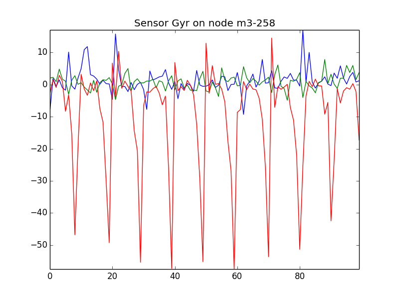

Do a circuit loop with a mobile M3 node
 Difficulty: Intermediate
Difficulty: Intermediate
 Duration: 20 minutes
Duration: 20 minutes
Prerequisites: Configure SSH Access / Experiment CLI client / Nodes Serial Link Aggregation
Description: The aim of this tutorial is to submit an experiment with a mobile M3 node and interact with it. A mobile node is a node embedded on a robot with predefined trajectories. You will book one mobile M3 node, set it up with a sample firmware file. Once the experiment running, you will interact with the firmware running on the node and graph IMU sensors values. After the experiment, you can plot the mobile node trajectory.
Since robots features are not yet included in the webportal, you will use here the cli-tools.
Launch the experiment
- Choose your node:
- Click on Activity
- Filter resources by choosing mobile only in the list
- Choose a node available and keep its node id
- Note: Try to take a node which was inactive the last two hours (to be sure to have enough battery).
- Choose your circuit, within the list returned by
iotlab-robot:iotlab-robot get -l
- Download the simple_robot.elf firmware binary for m3 nodes. For information, you can have a look at the firmware code.
- Submit an experiment with cli-tools, either from an SSH frontend or from your computer. In this example, we chose the m3-258 from Lille doing the square1 circuit:
iotlab-experiment submit -d 20 -n simple_robot_tutorial -l lille,m3,258,simple_robot.elf,mobility=square1
Or you may also let the scheduler choose the node just by describing node properties:
iotlab-experiment submit -d 20 -n simple_robot_tutorial -l 1,archi=m3:at86rf231+mobile=1+site=lille,simple_robot.elf,mobility=square1
You get an experiment id.
{kind=link}
Interact during experiment
- In a terminal on your computer, give access as a tcp socket (explanation in Advanced usage section of Nodes Serial Link Aggregation tutorial) :
socat tcp-listen:20000,fork,reuseaddr "exec:ssh <login>@<site>.iot-lab.info 'serial_aggregator'"
- In another terminal on your computer, download the live_imu.py script from our Openlab repository on GitHub.
Note: you need to have a working Python with Matplotlib installed. - Launch the script with the following parameters. Use the right TCP
portconfigured with socat before. Use the rightnodeid(e.g. m3-258) in order to filter incoming traffic from the serial_aggregator. Avalaible values for thesensoroption are Gyr (gyrometer), Acc (accelerometer), Mag (magnetometer).python ./live_imu.py --port 20000 --sensor Gyr --nodeid m3-258

- Close the trajectory plot and stop the socat command with Ctrl-C.
Mobile node’s trajectory
- Stop your experiment
iotlab-experiment stop
- Connect to the SSH fronted of Lille with X11 forwarding
ssh -X <login>@lille.iot-lab.info
- The mobile node trajectory is copied at the end of the experiment in your home folder in .oml files.
<login>@lille:~$ less ~/.iot-lab/<experiment id>/robot/m3-258.oml protocol: 4 domain: 39738 start-time: 1459778452 sender-id: m3-258 app-name: robot_position_measures schema: 0 _experiment_metadata subject:string key:string value:string schema: 10 robot_pose timestamp_s:uint32 timestamp_us:uint32 x:double y:double theta:double content: text 10.298170 10 1 1459778462 878753 2.526062 0.129655 -1.563731 10.398204 10 2 1459778462 978787 2.526062 0.129655 -1.563731 10.498178 10 3 1459778463 078761 2.526062 0.129655 -1.563731 ....
Trajectory Measure Table
Measure Unit x, y
z
thmeters, cartesian coordinates
meters, altitude which is a constant
radians, orientation around z axis - Plot your file using the
oml_plot_tools:<login>@lille:~$ plot_oml_traj -i ~/.iot-lab/<experiment id>/robot/m3-258.oml
You can use
--circuit-nameand--circuit-fileoptions to observe the mobile node trajectory respectively with the planned circuit and the site map.
{kind=link}
{kind=link}
{kind=link}
Additional details
During an experiment, a mobile node follows a trajectory chosen by the user (see step 2). Some details about the robots and
the trajectories for each site can be found on the GitHub wiki.
The iotlab-robot tool is the dedicated client to get the status of a robot or get and update mobilities. See the dedicated tutorial for more information.
It is also possible to visualize the robot trajectory in 3D using Gazebo on your PC workstation. For details, see the GitHub wiki.